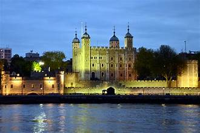
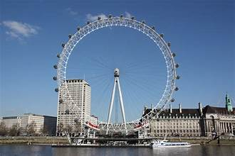
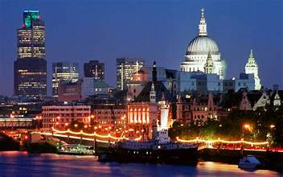
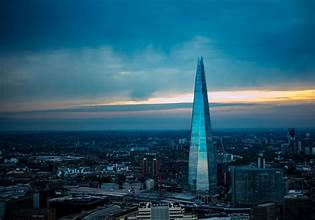
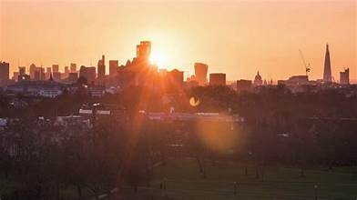
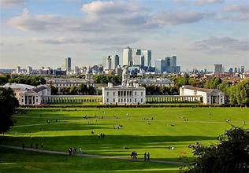

London, the vibrant capital of the United Kingdom, is a city that seamlessly blends rich history with contemporary energy. From iconic landmarks like the Tower of London, Buckingham Palace, and the British Museum to modern architectural marvels such as the Shard, London offers a diverse range of attractions. The city's history is palpable as you walk along the cobbled streets of Covent Garden or explore the ancient Tower of London. No visit to London is complete without savoring its culinary delights. Traditional British cuisine is a must-try, and you can indulge in classic dishes such as fish and chips or a hearty English breakfast. For a global culinary experience, London's diverse neighborhoods offer cuisine from around the world, with a particular focus on international street food at markets like Borough Market. Whether you're seeking history, art, culture, or culinary adventures, London has it all, making it a top destination for travelers from across the globe.
The British Museum, located in the heart of London, is a treasure trove of human history and culture. This world-renowned institution houses a vast collection of over eight million works, spanning thousands of years and continents. Visitors can explore the museum's galleries to discover priceless artifacts, including the Rosetta Stone, the Egyptian mummies, the Parthenon sculptures, and countless other pieces that tell the stories of civilizations from around the globe. The British Museum is not only a place of education and inspiration but also a testament to the universality of human heritage, making it a must-visit destination for history enthusiasts and curious travelers alike.
The Tower of London, a historic fortress and UNESCO World Heritage Site, stands proudly on the banks of the River Thames in central London. This iconic landmark has a storied history, serving as a royal palace, a prison, and a treasury. Today, it's a captivating museum that houses the Crown Jewels, offering visitors a chance to glimpse these dazzling symbols of monarchy. The Tower's medieval architecture and centuries-old stories, including those of Anne Boleyn and Sir Walter Raleigh, provide an immersive journey through time, making it a compelling destination for history buffs and tourists seeking to uncover the secrets of England's past.
The London Eye, an imposing observation wheel on the South Bank of the River Thames, offers visitors a breathtaking perspective of the British capital. As one of the world's tallest Ferris wheels, the London Eye provides panoramic views of the city's iconic landmarks, including Big Ben, St. Paul's Cathedral, and the Shard. A ride on the Eye, often referred to as a "flight," is a memorable experience, especially during sunset when the city's lights come to life. It's a must-do for tourists seeking a unique and awe-inspiring vantage point of London's sprawling beauty.
Exploring the London skyline can be a fascinating experience, offering breathtaking views of this dynamic city. Here's a brief guide to help you make the most of your London skyline adventure:
Start with a visit to The Shard, the tallest skyscraper in London. The Shard's viewing platform, "The View from The Shard," provides panoramic views of the city. It's especially mesmerizing during sunset or after dark when the city's lights come alive.
The iconic London Eye, located on the South Bank of the River Thames, is another great spot for skyline views. A ride in one of its capsules provides a unique perspective of the city's landmarks, including the Houses of Parliament and Buckingham Palace.
The Sky Garden, housed in the Walkie Talkie building, offers free public access to a lush indoor garden with remarkable 360-degree views of London. It's advisable to book tickets in advance.
For a more natural perspective of the city, head to Primrose Hill in Regent's Park. This elevated viewpoint offers stunning vistas of central London and is particularly delightful for picnics and sunsets.
Explore Greenwich, home to the Royal Observatory and the Prime Meridian Line. The hill in Greenwich Park provides beautiful vistas of the city's historic center, with Canary Wharf in the distance.
Enjoy traditional fish and chips at a local public.
Don't forget to ride the iconic red double-decker buses.